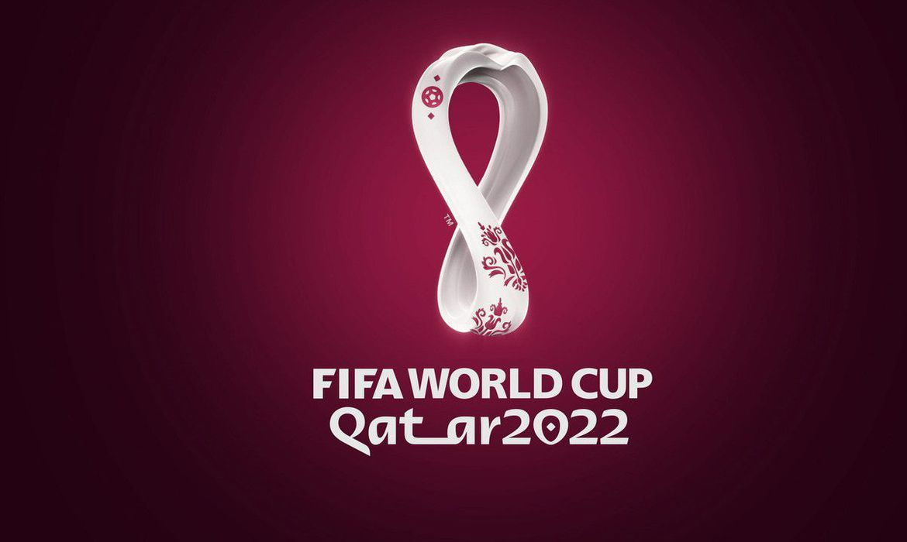

Com oito empreedimentos para jogos de futebol, o país terá inovações como o primeiro projeto "desmontável" da história
Você sabia que a Copa do Mundo FIFA 2022 será a mais compacta da história? Isso significa que os estádios mais distantes estão a apenas 70 km de distância um do outro – pouco mais que o trajeto entre o Aeroporto Internacional de Guarulhos e o Autódromo de Interlagos, em São Paulo, com 45 km. Conheça os oito estádios que receberão jogos de futebol (e torcedores) no Catar.
Construído em 1976, esse é o único estádio que já havia sido construído antes da Copa do Mundo. Mas, para receber a competição, o empreendimento foi completamente reformado e ganhou dois arcos que representam “o abraço dos torcedores”. Também fazem parte desse complexo shopping, centro aquático e hotel. Para os jogos, a capacidade do estádio é de 40 mil torcedores.
Percebeu o estilo de “tenda” do estádio? Para os escritórios AS + P Albert Speer + Partner e Dar Al-Handasah, é uma referência às Bayt al sha'ar, como são chamadas as tendas utilizadas pelos povos nômades do Catar. Esse será o palco de abertura da Copa do Mundo e tem capacidade para até 60 mil torcedores.
Desenhado pela arquiteta Zaha Hadid em conjunto com o escritório AECOM, essa obra homenageia os “dhow”, tradicionais barcos de pesca de pérolas, que são considerados símbolo do país. Oferece espaço para acomodar até 40 mil torcedores no jogos.
Essa obra à beira do deserto substitui o antigo estádio Al Rayyan Sports Club – time que chegou a ter o astro colombiano James Rodríguez. Com desenho assinado pelos escritórios BDP Pattern, Ramboll e AECOM, a fachada representa “a família, o deserto, a flora e fauna nativas, assim como o comércio local e internacional”. Atualmente recebe até 40 mil pessoas, mas, após a Copa do Mundo, diminuirá pela metade para se adequar ao uso local.
Com formato que lembra a “gahfiya”, chapéu tradicional da região que representa a transição para a vida adulta dos homens, o estádio tem assinatura do estúdio Ibrahim Jaidah Architects & Engineers e pode receber até 40 mil pessoas. Mas essa capacidade será reduzida pela metade após a competição – para dar lugar a um hotel – e os bancos serão doados a países em desenvolvimento.
Esse projeto do escritório Fenwick Iribarren Architects tem desde formas que lembram diamantes na fachada até sistema de refrigeração para os torcedores. Com foco em inovação, a obra também tem áreas verdes no interior e acessibilidade planejada. Dos 40 mil lugares, o estádio diminuirá para 25 mil após a competição e doará todos os bancos excedentes.
Feito em homenagem ao comercio internacional e à navegação, esse estádio traz 974 contêneires na fachada – número que também remete ao código de discagem do Catar. Mais impressionante é que toda a obra do Fenwick Iribarren Architects, que poderá receber até 40 mil torcedores durante a Copa do Mundo, será desmontado. É a primeira vez que isso acontece na competição.
Palco para a final da Copa do Mundo, esse estádio pode receber até 80 mil torcedores e é o maior deste edição. Com projeto do estúdio Foster + Partners e Populous, a obra traz representações da cultura árabe, como tigelas, vasos, peças de arte e embarcações como parte da decoração. Após a competição, será transformado em centro comunitário.